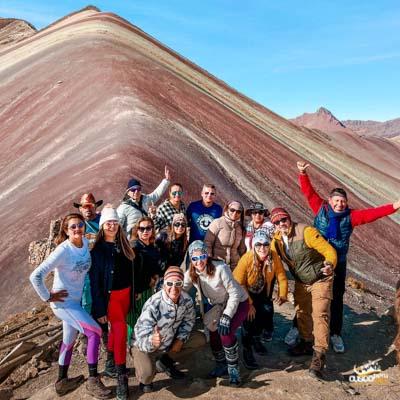

Cultura y paisajes de altura
Cinco días para vivir más de Cusco.
Combina Cusco, Valle Sagrado, Montaña de Colores y Machu Picchu en 5 días y 4 noches. Adaptamos las experiencias, el alojamiento y los trenes a tu viaje. Precio por persona sin alojamiento. Podemos coordinar hoteles con un costo adicional.
Operador local · Atención en español e inglés · Servicios sujetos a confirmación

Cusco y Valle Sagrado
Montaña de Colores tras aclimatarte
Machu Picchu como cierre de tu ruta
La ruta, día a día
Así puede ser tu viaje.
Una propuesta de 5 días / 4 noches para empezar a planificar. Ajustamos el orden y los servicios a tus vuelos, intereses y disponibilidad.
- Día1
Llegada y aclimatación en Cusco
Recepción y una primera jornada tranquila. Si llegas temprano, evaluamos el City Tour según tu energía y horario.
- Día2
Valle Sagrado
Recorrido cultural y paisajístico por el Valle Sagrado, con retorno a Cusco para descansar.
- Día3
Montaña de Colores
Salida a Vinicunca después de las primeras jornadas de aclimatación. Podemos evaluar otra experiencia si prefieres una ruta con menor exigencia física.
- Día4
Machu Picchu
Viaje en tren y visita guiada a Machu Picchu en la modalidad Full Day de la ruta sugerida. El circuito y los horarios se confirman según disponibilidad.
- Día5
Despedida de Cusco
Tiempo libre según tu horario y coordinación del traslado al aeropuerto o terminal terrestre.
Organizamos el viaje contigo
Cada detalle, coordinado.
- Adaptamos la ruta a tus horarios de llegada y salida de Cusco.
- Revisamos trenes, entradas y visitas guiadas para tu fecha.
- ¿Necesitas alojamiento? Podemos coordinarlo por WhatsApp y agregarlo con un costo adicional.
- Detallamos traslados, comidas, ingresos y servicios incluidos en la cotización.
- Los vuelos, mejoras de tren y otras experiencias se cotizan según lo que necesites.
Antes de viajar
Lo que necesitas saber.
¿Este paquete incluye alojamiento?
No. El precio publicado no incluye alojamiento. Si deseas agregarlo, contáctanos por WhatsApp: coordinaremos categoría, habitaciones y precio adicional. El alojamiento no se suma automáticamente al pago de esta página.
¿Las entradas a Machu Picchu están garantizadas?
Primero verificamos la disponibilidad para tu fecha. Te indicaremos el circuito, los horarios y las condiciones antes de confirmar la reserva o solicitar el pago de los servicios.
¿Puedo cambiar una experiencia o el orden de los días?
Sí. Podemos evaluar cambios según tus vuelos, el tiempo de aclimatación, tus intereses y la operación de cada tour. Tu propuesta final mostrará el itinerario acordado.
¿Cómo se calcula el precio para niños o grupos?
El total se calcula sumando adultos por la tarifa de adulto y niños por la tarifa infantil indicada. La tarifa infantil aplica de 3 a 11 años cumplidos a la fecha del viaje. Desde los 12 años se aplica la tarifa de adulto. Para menores de 3 años, consulta por WhatsApp antes de reservar. El alojamiento y otros servicios adicionales se coordinan y cotizan aparte.